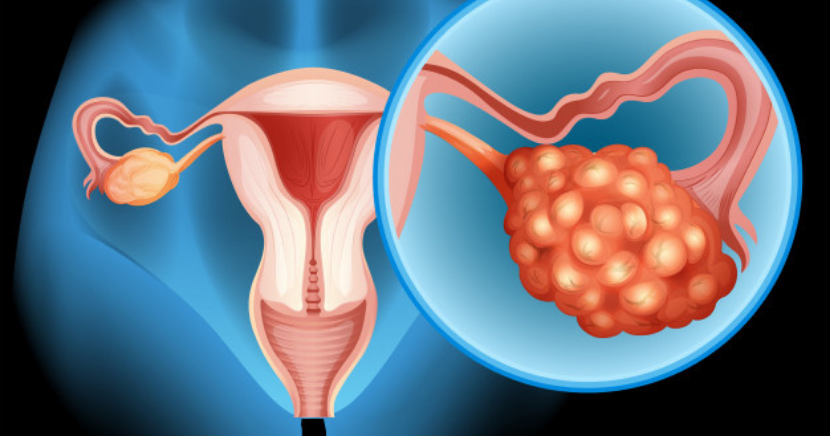
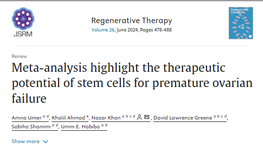
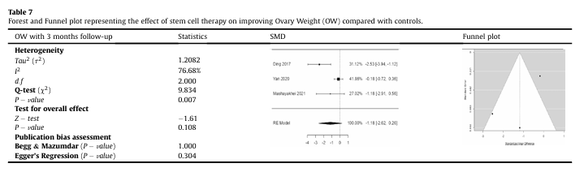
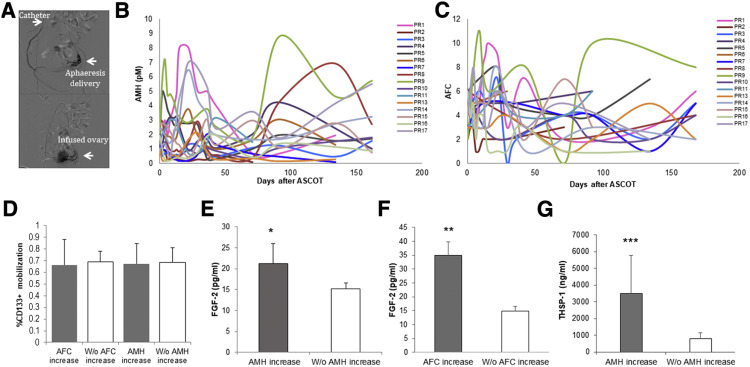
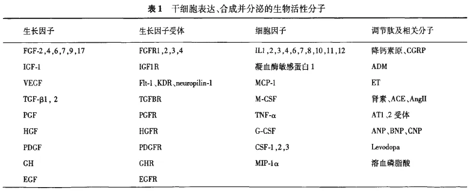
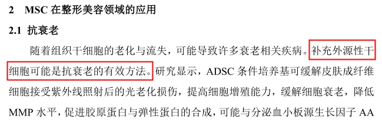
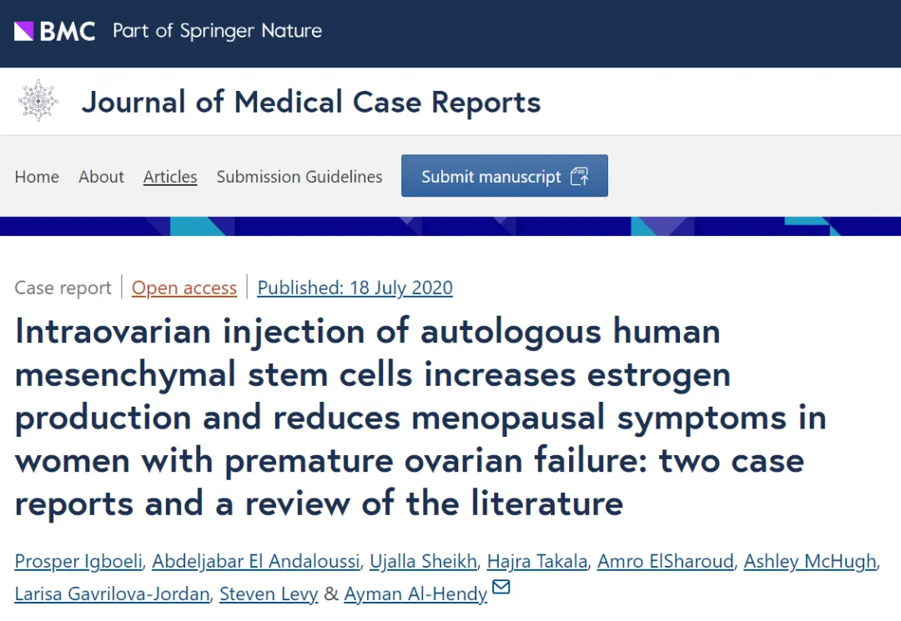
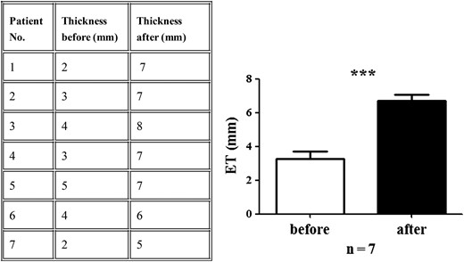

别等身体亮红灯！百年春自体干细胞，为您定制细胞级抗衰防线
2026-03-04

About Us
关于百年春

卵巢早衰（POF），在临床上被称为早发性卵巢功能不全，指的是女性在40岁之前出现卵巢功能的减退。
这种衰退有着极大的“毁灭力”，不但能重创女性生育力，加速容颜衰老，提早更年期，还会让患者面临着与同龄人相比更高的骨质疏松及心血管疾病患病风险。
尽管可用激素替代疗法、合成生物激素等方法治疗POF，但均无法持续有效。POF仍是一个难以被逆转的过程。这样的现状如重石一般压在患者心头，也催促着科学家尽快找到破局之法。
而在各类待发掘的“潜力股”中，干细胞疗法的表现不俗。经化疗诱导的POF小鼠模型就表明：将干细胞移植到卵巢组织中可恢复卵巢功能。那么，如果将其运用到人身上也能展现出同样的安全性与有效性吗？
为了弄清这一问题，美国与巴基斯坦的研究团队系统性回顾分析了过往应用干细胞治疗POF的研究，涉及153名患者。他们发现：干细胞可通过改善生育能力、提高卵巢重量、使血清中的性激素水平（E2和FSH）正常化及增加怀孕次数来显着改善POF患者的卵巢功能。是一种颇具潜力的未来疗法。

△荟萃分析强调了干细胞对卵巢早衰的治疗潜力
01、夺回生育力，干细胞挽救卵巢早衰
研究团队在四大数据库中系统性搜寻2023年6月前干细胞治疗POF的相关研究，最后筛选的干细胞治疗组共包括153名患者。
他们重点关注了卵泡计数（FC）、促卵泡激素（FSH）、雄二醇（E2）、卵巢重量（OW）以及患者怀孕和活产的数量。而经过归纳分析，这些指向POF患者卵巢功能的可靠指标均呈现出积极结果。

△与对照组相比，干细胞疗法对改善卵巢重量（OW）的影响
比如，在一项涉及17名患者的研究中，81.3%的患者表现出卵巢功能生物标志物的改善，特别是抗苗勒管激素（AMH）水平和窦卵泡计数（AFC），并有6次成功怀孕；另一项涉及10名年轻POF女性的研究同样观察到了积极结局，其中2例患者月经恢复，1例患者成功怀孕，并生下了健康的宝宝......

△17名根据欧洲人类生殖与胚胎学会（ESHRE）标准定义“反应不佳”的患者进行自体干细胞卵巢移植，图为实验的程序、随访及组成
它们共同指向：干细胞移植可显著改善POF患者的卵巢功能，具体体现在恢复生育能力、增加卵巢重量、使血清性激素水平（E2 和 FSH）正常化以及增加妊娠次数。
那么，在这一场场“卵巢保卫战”，干细胞究竟是凭何发挥益处的呢？研究者将其归因于干细胞的归巢、分化和旁分泌功能。
所谓“归巢”，指的是干细胞能够找到自己该去的“地方”。具体可分为系统性归巢与非系统性归巢，鉴于文中提到的注射方式多为局部注射，其中归巢应属于后者，即干细胞可依照趋化因子浓度梯度的“导航”，被移动到受损部位发挥作用。
接下来，干细胞一方面能凭借着自我更新及多向分化能力分化为卵母细胞和颗粒细胞，以修复卵巢功能。另一方面，结合以前研究，干细胞能分泌不同的细胞因子和生长因子（如血管内皮生长因子（VEGF）、肝细胞生长因子（HGF）和成纤维细胞生长因子2（FGF2）等），这些细胞因子能通过增强细胞存活、增殖及功能，对修复组织损伤产生积极作用。像FGF2，就被证明对血管生成以及子宫内膜细胞的增殖和重塑至关重要；也能减轻组织中的炎症。

△干细胞的旁分泌作用。可分为六大类：免疫调节、抗凋亡、血管生成、支持局部干细胞和祖细胞的生长和分化、抗瘢痕形成和化学吸引
而也正是这些独特的能力，让干细胞成为治疗POF患者的可行选择。
02、从内而外，干细胞保卫女性健康
该研究强调了干细胞治疗POF的宽阔前景，但在守护女性健康上，干细胞能做的还有很多。
1、抵抗衰老
在抵抗衰老方面，干细胞是由表及里的。针对外表的抗衰需求，《协和医学杂志》曾在《间充质干细胞在整形美容领域的应用》中详细描述了干细胞在皮肤抗衰、促进毛发再生以及组织再生上的不俗表现。并提出观点：“补充外源性干细胞是抗衰老的有效方法。”

△《间充质干细胞在整形美容领域的应用》原文截图
在修护“内里”方面，美国国立卫生研究院在《老年学杂志》（The Journals of Gerontology）上发表的综述认为，干细胞疗法具有恢复机体老化系统功能的潜力，并认为，理论上外源性补充强大的干细胞不仅可以为系统补充额外的年轻干细胞，还可以修复老化系统，从而达到治疗机体虚弱与衰老的目的。
2、提高激素水平
更年期之所以难熬，一个重要原因在于这个时期女性体内的激素水平并不稳定，由此衍生出潮热、盗汗等更年期状态。而干细胞刚好可以干预体内的激素水平。
《Case report》上的一篇文章就证实，注射自体间充质干细胞可让卵巢早衰患者雌激素分泌增加，并有效缓解更年期症状。

△卵巢内注射自体人间充质干细胞可增加卵巢早衰女性雌激素的产生并减轻更年期症状：两例病例报告和文献综述
共有两位患有卵巢早衰的志愿者参与了这场实验，间充质干细胞通过腹腔镜被移植到右侧卵巢组织内，一段时间后，与注射了生理盐水的左侧卵巢相比，右侧卵巢体积增加，血清中雌激素水平升高，更年期症状明显缓解，这种效果一直持续到了研究结束。
除此以外，研究者还观测到患者体内雌激素水平上升，一位患者甚至“迎回”月经，更年期症状也有所改善。
3、改善宫腔粘连
宫腔粘连（IUA），又称为Asherman综合征，是一类以宫内出现粘连和瘢痕为特征的疾病。通常由子宫损伤引起，病患可能会出现月经异常、周期性腹痛、不孕、反复流产或早产等临床症状。
2016年，在一项发表于《HUMAN REPRODUCTION》（影响因子：6）的研究中，有7名被诊断为严重AS（III-V级）宫腔粘连的患者接受了细胞移植，结果显示有5名患者的子宫内膜厚度显著增加到7mm，这确保了胚胎着床。随后，4例患者接受了冷冻胚胎移植，其中2例受孕成功，1例患者在第二次细胞移植后自发妊娠。

△移植前后的子宫内膜厚度
干细胞之所以能改善宫腔粘连，在于其能够在趋化因子的引导下趋化至损伤部位，通过旁分泌大量生长因子和炎症因子来修复受损的子宫内膜，以改善患者的生育功能。例如：干细胞可以分泌HGF、HO等细胞因子，抑制与TGF-β-smad通路激活相关的α-SMA、I型胶原、CTGF和纤连蛋白的表达上调，从而达到抑制组织纤维化的目的；它还能通过分泌VEGF、bFGF、HGF、IL-6等功能性因子，促进血管网络的重塑和子宫内膜组织的再生。
除此以外，干细胞在修复子宫瘢痕、子宫内膜损伤上也有不小的前景。干细胞在维护女性健康方面交出了亮眼的答卷，我们也希望在学者不断地摸索及研究之下，这些研究能最终能走向临床，面向大众，让受困于疾病的万千女性走出阴霾。